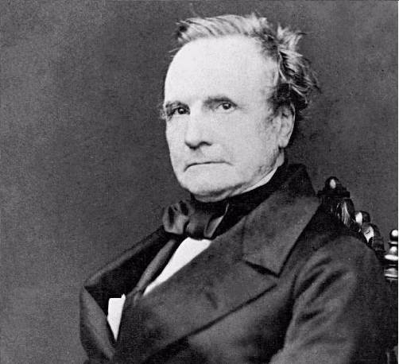
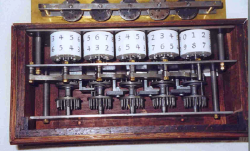

CLUBE DE INFORTMÁTICA
O clube de informática foi feito no começo do ano de 2022, pensado e projetado pelos alunos Italo (2 ano C) e Felipe (1 ano A), foi criado inicialmente com a proposta de mostrar e conhecer mais sobre a informática e tecnologia.
A HISTÓRIA DA INFORTMÁTICA
A história da informática pode ser rastreada até o final de 1800, quando os primeiros sistemas de proto-informática foram criados. Esses primeiros sistemas foram usados por matemáticos e cientistas para armazenar e processar dados. Em 1937, John von Neumann publicou seu artigo, "The Mathematical Theory of Communication", que delineou os princípios da arquitetura moderna de computadores. Este trabalho seminal foi um marco importante na desenvolvimento da informática.
Na década de 1950, os computadores começaram a se tornar disponíveis para mais pessoas e empresas. O primeiro computador eletrônico foi construído em 1951 por Konrad Zuse e entrou em operação dois anos depois. Neste momento, a tecnologia da informação (TI) consistia em tarefas de computação manual realizadas por especialistas usando tubos de vácuo e interruptores eletromecânicos.
Durante a década de 1960, os computadores digitais começaram a se tornar populares e novos aplicativos de software estavam sendo desenvolvidos para serem executados nessas máquinas. Em 1965, Douglas Engelbart apresentou um artigo no MIT intitulado "A Display System for Computer Graphics". Este documento de referência descreveu como um computador pode ser usado para criar imagens e exibições gráficas usando comandos de texto em vez de instruções de código de máquina.
Mais ou menos nessa mesma época, Joseph Weizenbaum criou uma forma inicial de inteligência artificial chamada programação de lógica difusa que permitia aos computadores Alimentada pelo investimento do governo e pela histeria pública, a pesquisa avançou em passos largos, principalmente na área da informática.As Guerras Mundiais ganharam grande destaque por atingir direta e indiretamente todos os países do globo terrestre, tomando proporções jamais vistas na história da humanidade. Houve avanço cientifico tecnológico tanto para fins militares, como o aprimoramento e criação de armas, quanto para a população civil como o avanço na medicina e o desenvolvimento dos antibióticos, até aparelhos que usamos no nosso cotidiano diário.
COMEÇO DA INTERNET
Com o intuito de facilitar a troca de informações, porque temiam ataques dos soviéticos, o Departamento de Defesa dos Estados Unidos (ARPA - Advanced Research Projects Agency) criou um sistema de compartilhamento de informações entre pessoas distantes geograficamente, a fim de facilitar as estratégias de guerra. Já na década de 90, o cientista, físico e professor britânico Tim Berners-Lee desenvolveu um navegador ou browser, a World Wide Web (www), a Rede Mundial de Computadores - Internet. partir disso, a década de 90 ficou conhecida como o "boom da internet", pois foi quando ela se popularizou pelo mundo, com o surgimento de novos browsers ou navegadores — Internet Explorer, Netscape, Mozilla Firefox, Google Chrome, Opera, Lynx — e o aumento do número de usuários, navegadores da internet. Diante disso, ocorre uma grande proliferação de sites, chats, redes sociais — orkut, facebook, msn, twitter —, tornando a internet a rede ou teia global de computadores conectados.

CURIOSIDADE
a pascalina é um aparelho mecânico com seis rodas dentadas, cada uma com algarismos de 0 a 9. Com ela, era possível somar três parcelas de uma vez, até o valor 999.999. Há relatos de que, 20 anos antes dela, em 1623, o alemão Wilhelm Schickard teria criado um instrumento semelhante ao do francês.
- Italo Lauan Sena Nunes
- Melina Dias Ramos
- André Luiz Rodrigues Batista
- Josué Ferreira Ribeiro
- Quem somos :